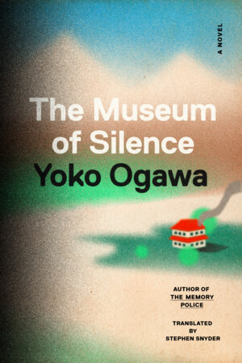

The Museum of Silence
Yoko Ogawa, translated by Stephen Snyder
From the author of the National Book Award finalist The Memory Police. Pantheon describes a young curator who accepts a job in a small, nondescript town, working with the private collection of a wealthy and imperious old woman. He comes to live on her estate, in a cloistered community that includes the old woman's adopted daughter, a housekeeper, and a gardener.
The pieces she wants him to build the museum around are stolen objects, each one taken from a person who has died in the town since she was a child. Not long after he begins, a series of unexpected and violent deaths occur, including the town's first murder in decades, and the curator becomes a prime suspect. Stephen Snyder translated the book from the Japanese.
A title in our Japanese Lit collection. Pantheon places the story in a small, nondescript town and does not name the town, so the book is not pinned on the B&S Literary Atlas. Go There. Read It.
In the Bookstore: Japanese Lit →
Buy NowTip the Booktender